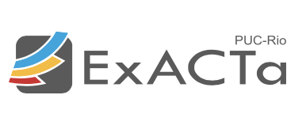

Industrial experiences
In the following you can see my industrial experience. Click on each title to see a summary.
-
Dec 2023 - Nov 2019Software Engineer for Artificial Intelligence-based SystemsExacta Initiative PUC-Rio, Brazil, Full-time
- Designed, built, deployed and monitored computer vision and ML applications. These released applications, for example, save energy equivalent to that consumed by a city of 20 thousand inhabitants and save thousand of dollars per year.
- Established the end-to-end development process for these applications, including project setup, creation of Jupyter notebooks, data streaming pipelines, tests and version control procedures.
- Researched the state-of-the-art in ML and related fields to explore novel ideas and drive innovations. This effort resulted in the refactoring of 3 out of 6 applications.
Skills: Python Microsoft Azure Machine Learning Jupyter Notebook Lean Inception Scrum Git Google Cloud Platform A/B Testing Exploratory Data Analysis Teamwork
Nov 2019 - Nov 2017Software Quality Assurance EngineerGM5, Brazil, Part-time- Implemented Jira features, an issue tracking product that allows bug tracking and agile project management.
- Collaborated with stakeholders and inspected requirements in order to improve the quality of system. specifications, resulting in a 30% reduction in delivery deviations for customers.
- Created detailed test cases and test scripts based on the software requirements.
Skills: Jira Software Quality Assurance Requirements Engineering Code Review Defect Inspection Scrum Test Cases
Jan 2017 - Jan 2016Financial System AdministratorBanco Caja Social, Colombia, Full-time- Developed and maintained data models to represent the structure and relationships within the database.
- Monitored and optimized database performance by analyzing query execution plans.
- Planned for database growth, ensuring that the system has sufficient resources to handle increased data volumes.
Skills: Oracle Database SQL Financial Services UML
Jan 2016 - Aug 2015Information Security AnalystBanco de Occidente, Colombia, Full-time- Identified and assessed potential security risks and vulnerabilities in the organization's systems.
- Developed, updated, and enforced security policies and procedures to ensure compliance with the Colombian bank industry standards and regulations.
- Conducted regular security audits to evaluate the effectiveness of existing security measures and identified areas for improvement.
Skills: Information Security OWASP ISO 27001 COBIT